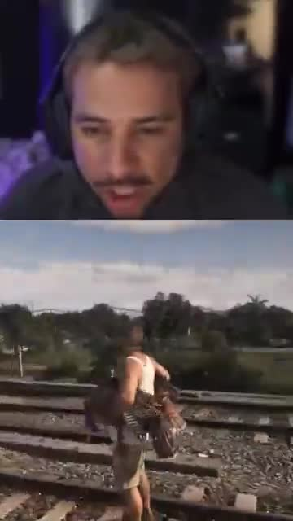

Passo 0
Como a máquina funciona
Depois de montado, cada live passa por 7 etapas. Quase todas rodam sozinhas. As marcadas como você levam poucos minutos.
- Você cola o link da live você · 10 sVOD da Twitch, live encerrada do YouTube ou o arquivo que você gravou.
- Baixa o áudio e o chat automáticoSó o áudio, que é leve. O vídeo inteiro de uma live de 6 horas passa de 10 GB; o áudio dá uns 300 MB.
- Acha os picos automáticoCompara cada momento com os 5 minutos anteriores: chat acelerando, enxurrada de KKKK, LUL e "???", e a voz do streamer subindo (grito, risada). É assim que um editor humano acharia, só que em 1 minuto.
- O Claude escolhe automáticoTranscreve só os candidatos, lê o que foi dito e o que o chat escreveu, descarta o que precisa de contexto e escolhe de 3 a 8 cortes, com o gancho de cada um.
- Monta os vídeos automáticoBaixa só os pedaços escolhidos, acha a câmera do streamer olhando um print da tela e monta o 9:16: câmera em cima, jogo embaixo, legenda palavra a palavra, gancho, crédito e volume no padrão das redes. Escreve o texto do post de cada rede.
- Você revisa e agenda você · 10 a 15 minAssiste, pede ajuste em português ("começa 2 segundos antes", "troca o gancho"), e agenda nas 3 redes.
- Os números voltam pro Claude você · 5 min por semanaVocê manda os números da semana e ele escreve o que funcionou num arquivo que lê antes de cada corte novo.
Assim fica um corte

Escolha o seu caminho
Grátis
skill cortes-gta · roda no seu PC
- Lê o chat da live pra achar os picos (o diferencial pra GTA)
- Layout jogo + câmera, legenda, gancho e crédito
- Sem limite de lives nem de cortes
- Custo: só a assinatura do Claude que você já tem
- Precisa de um PC razoável e de instalar (passo 3)
Pago
OpusClip · roda na nuvem
- Não instala nada pesado, roda até em notebook fraco
- Acompanha o rosto e a ação sozinho, nota de viralização
- Agenda e posta direto no TikTok, YouTube e Instagram
- Não lê o chat; o link precisa ser do YouTube ou um arquivo
- Custo: plano pago em dólar, com limite de horas por mês
Minha recomendação: comece pelo grátis. Ele foi feito pra live de GTA e não tem limite. Vá pro pago se o seu computador for fraco (menos de 8 GB de memória) ou se você quiser postar nas 3 redes sem abrir nenhum app.
O que você precisa
No vídeo eu usei a claude-shorts. Ela é ótima pra vídeo de fala (podcast, react), mas não lê o chat e não monta o jogo com a câmera do streamer. Pra live de GTA, a cortes-gta faz melhor. Se você já instalou a claude-shorts, pode manter as duas.
Passo 1 · 15 minutos
A página
Uma página de cortes cresce pelo nome que as pessoas lembram e pelo ritmo de post. Faça as 3 contas com o mesmo @, pra quem te acha numa rede te achar nas outras.
1.1 Nome, bio e foto com o Claude
Abra o Claude (no navegador ou no app) e cole:
Vou abrir uma página de cortes de lives de GTA VI no TikTok, no Instagram e no YouTube Shorts, em português. Me dê 15 nomes curtos (até 15 letras), fáceis de falar e de digitar, sem "oficial" e sem marca registrada. Separe em 3 estilos: sério, engraçado e com gíria. Depois, pro nome que eu escolher, escreva a bio de cada rede (Instagram até 150 caracteres, TikTok até 80) e me diga o que pôr na foto de perfil pra ela ser lida bem pequena.
Confira se o @ está livre nas 3 redes antes de decidir. Na foto, nada da arte oficial do jogo nem do logo: um símbolo seu ou o nome em letra grossa, com as cores do pôr do sol de Vice City.
1.2 Ajuste cada conta
- Instagram: mude pra conta profissional (Configurações › Tipo de conta e ferramentas › Mudar pra conta profissional › Criador). É isso que libera o agendamento grátis e os números do passo 8.
- TikTok: conta comum já serve. O agendador fica no TikTok Studio, no navegador.
- YouTube: crie um canal com o nome da página na sua conta Google. Shorts é só vídeo vertical de até 3 minutos.
Antes da 1ª live cortada, poste 2 ou 3 vídeos de aquecimento: "o que a Rockstar já confirmou", contagem regressiva, Vice City comparada com Miami real. Conta que estreia sem nenhum post é mostrada pra menos gente.
Passo 2 · 10 minutos
Quem cortar
A escolha de streamer pesa mais que a edição. Procure 3 a 5 canais com: live longa e frequente, chat movimentado (é o que a skill usa pra achar os picos), câmera ligada e muita gente assistindo os cortes dele em outras páginas.
O sinal mais simples de que dá pra cortar: já existem páginas de corte postando aquele streamer faz tempo, com vídeos no ar. Muitos streamers grandes inclusive incentivam, porque corte leva gente pra live. Dê o crédito na tela (a skill põe sozinha) e no texto do post. Se algum dia um streamer pedir pra tirar, tire e pare de cortar aquele canal. É isso.
O Claude pesquisa pra você. No Claude, com a busca na web ligada:
Pesquise na web os streamers brasileiros que mais fizeram live de GTA VI nos últimos 7 dias, na Twitch e no YouTube. Pra cada um, me diga: média de gente assistindo, quantas horas de live por semana, se usa câmera, se o VOD fica disponível depois da live e se já existem páginas de corte postando ele no TikTok e no Instagram (com exemplos). Monte uma tabela com os 10 melhores pra uma página de cortes nova começar, e destaque 3 que estão crescendo mas ainda têm pouca página de corte.
Dica de quem começa: streamer gigante tem 30 páginas cortando a mesma live. Um médio que está crescendo tem 2 ou 3. É mais fácil aparecer no segundo.
Passo 3 · 30 a 40 minutos, só uma vez
Instalar (uma vez)
Três partes: as ferramentas de vídeo, o Claude Code (o Claude que mexe no seu computador) e a skill. Escolha o seu sistema:
3.1 Ferramentas de vídeo
Clique com o botão direito no menu Iniciar e abra o Terminal (ou o PowerShell). Cole os 3 de uma vez e aceite o que ele pedir:
winget install -e --id Git.Git winget install -e --id Python.Python.3.12 winget install -e --id Gyan.FFmpeg
Feche e abra o Terminal de novo (senão ele não enxerga o que acabou de instalar) e confira:
python --version; ffmpeg -version | Select-Object -First 1; git --version
Deve aparecer: Python 3.12…, ffmpeg version …, git version …
3.2 Claude Code
irm https://claude.ai/install.ps1 | iex
Feche e abra o Terminal, digite claude e aperte Enter. Ele abre o navegador pra você entrar com a sua conta do Claude. Entre e volte pro Terminal.
Deve aparecer: a tela de boas-vindas do Claude Code, com o seu e-mail.
3.3 A skill cortes-gta
Abra outra janela do Terminal (deixe o Claude Code quieto na outra) e cole:
New-Item -ItemType Directory -Force "$HOME\.claude\skills" | Out-Null; Expand-Archive -Force "$HOME\Downloads\cortes-gta.zip" "$HOME\.claude\skills"; Get-ChildItem "$HOME\.claude\skills\cortes-gta"
Deve aparecer: fontes, memoria, referencias, scripts, requirements.txt e SKILL.md.
3.1 Ferramentas de vídeo
Abra o app Terminal (Cmd + espaço, digite Terminal). Se ainda não tem o Homebrew, cole o comando da página brew.sh e rode as 2 linhas que ele mostra no final. Depois:
brew install ffmpeg python git
python3 --version; ffmpeg -version | head -1
Deve aparecer: Python 3.10 ou mais novo e ffmpeg version …
3.2 Claude Code
curl -fsSL https://claude.ai/install.sh | bash
Feche e abra o Terminal, digite claude e aperte Enter. Ele abre o navegador pra você entrar. Entre e volte pro Terminal.
Deve aparecer: a tela de boas-vindas do Claude Code, com o seu e-mail.
3.3 A skill cortes-gta
Numa janela nova do Terminal:
mkdir -p ~/.claude/skills && if [ -f ~/Downloads/cortes-gta.zip ]; then unzip -o ~/Downloads/cortes-gta.zip -d ~/.claude/skills; else cp -R ~/Downloads/cortes-gta ~/.claude/skills/; fi && ls ~/.claude/skills/cortes-gta
Deve aparecer: SKILL.md fontes memoria referencias requirements.txt scripts
3.1 Ferramentas de vídeo (Ubuntu, Debian e derivados)
sudo apt update && sudo apt install -y ffmpeg python3 python3-pip python3-venv git unzip curl
3.2 Claude Code
curl -fsSL https://claude.ai/install.sh | bash
Feche e abra o terminal, digite claude, entre com a sua conta e volte.
3.3 A skill cortes-gta
mkdir -p ~/.claude/skills && unzip -o ~/Downloads/cortes-gta.zip -d ~/.claude/skills && ls ~/.claude/skills/cortes-gta
Deve aparecer: SKILL.md fontes memoria referencias requirements.txt scripts
3.4 O Claude termina a instalação
Daqui pra frente você não digita mais comando. Crie uma pasta pros cortes e abra o Claude Code nela:
mkdir cortes-gta-lives cd cortes-gta-lives claude
E peça:
Use a skill cortes-gta. Rode o checar dela e instale tudo o que faltar, inclusive o TwitchDownloaderCLI pro chat da Twitch e o streamlink. No fim, rode o checar de novo e me mostre o resultado.
Ele vai pedir permissão pra rodar comandos. Leia e aperte Enter pra aceitar (ou escolha a opção de não perguntar de novo pra esta pasta).
Deve aparecer no fim: "Tudo certo." com OK em ffmpeg, yt-dlp, faster-whisper, numpy, TwitchDownloaderCLI e streamlink.
Pronto, isso só se faz uma vez. Da próxima vez é só abrir o Terminal, entrar na pasta (cd cortes-gta-lives) e digitar claude.
Passo 4
Cortar a primeira live
4.1 Pegue o link
- Twitch: no canal do streamer, aba Vídeos › clique na live passada › copie o link. Tem que ter
/videos/e um número. Alguns canais apagam o VOD ou deixam só pra inscrito; aí escolha outro streamer ou grave ao vivo (4.4). - YouTube: o link da live depois que ela terminou (aba Ao vivo do canal).
- Arquivo: uma gravação que você tem no computador. Se gravou pelo 4.4, o chat vem junto.
4.2 Peça os cortes
No Claude Code, aberto na pasta cortes-gta-lives:
/cortes-gta Corta essa live: COLE_O_LINK_AQUI O streamer é @NOME_DO_CANAL. Quero de 5 a 8 cortes. Me mostre a lista com o gancho e o motivo de cada um antes de montar.
Troque o link e o nome. Agora ele trabalha sozinho, e você acompanha na tela. Numa live de 4 a 6 horas, em um computador comum:
São estimativas: computador mais fraco demora mais na transcrição, internet lenta demora mais no download. A primeira vez demora uns minutos a mais porque baixa o modelo de transcrição.
4.3 O que ele te mostra
Primeiro a lista: "c03, 1:42:10, fuga da polícia que termina no mar, chat explodiu em KKKK, gancho: Ele achou que a polícia tinha desistido". Você responde "pode montar" ou "tira o 2 e o 5". Depois, os vídeos prontos na pasta prontos, dentro da pasta da live, cada um com um .txt do lado com o texto do post de cada rede.
Pra abrir a pasta: no Windows, peça "abre a pasta dos cortes prontos no Explorer"; no Mac, "abre no Finder".
Quer pular a aprovação da lista? Tire a última frase do pedido. Ele escolhe e já monta.
4.4 Gravar a live enquanto ela acontece
Pra streamer que apaga o VOD, ou pra você ter o chat completo:
/cortes-gta Grava a live de twitch.tv/NOME_DO_CANAL com o chat, numa pasta com a data de hoje. Quando a live acabar, corta ela do jeito de sempre.
Deixe o computador ligado e o Claude Code aberto. Ocupa de 3 a 6 GB por hora de live. Quer cortes no meio da live? Peça "corta o que já foi gravado até agora" a cada 1 ou 2 horas.
Passo 5 · 5 a 10 minutos
Revisar e ajustar
Assista cada corte uma vez, no celular de preferência (mande pra você mesmo). Pergunte: a ação começa no 1º segundo? Eu entenderia sem ter visto a live? O final tem a reação? Se algo estiver errado, peça em português. Ele refaz só aquele corte em menos de um minuto.
No corte 03, começa 2 segundos antes e termina logo depois da risada dele. Refaz só esse.
Me dá 5 opções de gancho pro corte 02, até 6 palavras, que contem a situação sem entregar o final. Depois usa a que você acha mais forte e refaz.
No corte 01 a câmera ficou cortando o rosto dele. Olha de novo o print da tela, acerta a caixa da câmera e refaz. Se ele não estiver com câmera nesse trecho, usa o layout jogo.
Na legenda do corte 04, onde aparece "COMANDO" é "CONVOY", e o nome do streamer se escreve assim: NOME. Corrige a transcrição e refaz.
Tem um momento perto de 2:15:00 em que ele bate o carro no avião. Acha esse trecho, transcreve e monta como mais um corte.
Daqui pra frente, usa nos cortes a cor #F36A78 no destaque do gancho e #FFB458 na palavra falada da legenda, e o crédito no formato "live de @canal". Anota isso no aprendizados da skill pra valer sempre.
Os 3 motivos que mais derrubam um corte: começar devagar ("ô chat, olha isso"), precisar de contexto ("lembra daquele cara de ontem?") e gancho que entrega o final. Se um corte tem um desses, peça pra ajustar ou descarte. Mais vale 3 bons que 8 médios.
Passo 6 · opcional
Caminho pago: OpusClip
O OpusClip corta na nuvem: você manda o link, ele devolve clipes verticais com legenda, acompanha o rosto e a ação, dá uma nota de viralização pra cada um e pode agendar direto nas redes. Com o conector dele, o Claude Code controla tudo isso por você.
6.1 O plano
Crie a conta em opus.pro. O plano grátis serve pra testar no site, mas o conector com o Claude e a montagem dos vídeos por ele precisam de um plano pago (Pro ou acima), cobrado em dólar e com limite de horas de vídeo por mês. Confira o preço do dia na página de planos antes de assinar.
6.2 Ligue o OpusClip no Claude Code
Num Terminal (fora do Claude Code):
claude mcp add --transport http opusclip https://mcp.opus.pro/mcp
Abra o Claude Code, digite /mcp, escolha opusclip e faça o login no navegador quando ele abrir.
Deve aparecer em /mcp: opusclip · connected
6.3 Peça os cortes
Use o OpusClip pra cortar essa live: COLE_O_LINK_AQUI Clipes verticais 9:16 de 15 a 40 segundos, legenda em português, layout com o jogo e a câmera do streamer. Me mostre os 8 com maior nota, com o gancho e o motivo de cada um. Pra cada um, escreva o texto do post do TikTok, do Reels e do Shorts com crédito pra @NOME_DO_CANAL, seguindo o referencias/postagem.md da skill cortes-gta.
Live da Twitch: o OpusClip aceita links do YouTube e de outras plataformas de vídeo, e arquivos. Se o link da Twitch não for aceito, peça ao Claude: "baixa essa live da Twitch com a cortes-gta e sobe o arquivo no OpusClip". Ele baixa e usa o link de envio do OpusClip.
6.4 O melhor dos dois
O OpusClip não lê o chat. A cortes-gta lê. Juntando os dois, a skill grátis acha os picos pelo chat e o OpusClip monta só esses trechos, o que também gasta menos das suas horas do plano:
/cortes-gta Baixa e acha os picos dessa live: COLE_O_LINK_AQUI. Escolhe os 6 melhores momentos, baixa só esses trechos com 10 segundos de folga e manda cada trecho pro OpusClip montar com legenda em português. Depois agenda pelo OpusClip nas redes conectadas, um a cada 3 horas a partir das 12h de amanhã.
Agendamento automático: o OpusClip só posta nas contas que você conectou no site dele (Configurações › Contas sociais). Sem isso, ele monta os clipes e você agenda como no passo 7.
Passo 7 · 10 minutos por dia
Postar nas 3 redes
O mesmo vídeo vai pro TikTok, pro Reels e pro Shorts. O texto de cada rede já está no .txt ao lado do vídeo.
7.1 Quanto e quando
- Começo: 2 a 4 cortes por dia em cada rede, com 2 horas ou mais entre eles.
- Horários de partida (Brasília): 12h, 18h e 21h. Em 2 semanas os seus números mostram os seus.
- Lance quente de estreia ou de evento grande: poste no mesmo dia. Corte de GTA perde força em 24 horas.
7.2 Agendar de graça
| Rede | Onde agendar |
|---|---|
| Instagram (e Facebook) | Meta Business Suite (business.facebook.com ou o app) › Criar Reel › Programar. Precisa da conta profissional do 1.2. |
| YouTube Shorts | YouTube Studio › Criar › Enviar vídeos › Visibilidade › Programar. |
| TikTok | No computador, tiktok.com/tiktokstudio › Enviar › Programar. Agenda até 10 dias antes. |
Com 5 cortes, agendar tudo nas 3 redes leva uns 10 minutos. Peça ao Claude a grade pronta:
Monta a grade de postagem dos cortes prontos de hoje: qual corte vai em qual horário (12h, 15h, 18h, 21h), começando pelo mais forte, nas 3 redes. Pra cada um, me dá o texto do TikTok, do Reels e o título e a descrição do Shorts prontos pra copiar.
7.3 Agendar pelo Claude (opcional)
Se você usa um agendador com conector pro Claude, como o Metricool, ligue o conector no Claude (Configurações › Conectores) e peça: "agenda os cortes de hoje nos horários da grade nas 3 redes". O vídeo precisa estar num link público ou já enviado pro agendador. Confira o limite de posts do plano grátis do agendador.
7.4 O texto do post
- 1ª linha: um gancho diferente do que está no vídeo ("O chat avisou e ele não ouviu").
- Crédito: "live de @canal".
- Uma chamada: "segue pra ver o próximo" ou "comenta qual streamer a gente corta amanhã".
- 3 a 5 hashtags: #gta6 #gtavi, o nome do streamer e o tema.
Depois de postar, fique 15 minutos respondendo comentário. Isso sozinho já empurra o vídeo.
Passo 8 · 5 minutos por semana
Melhorar com os números
É aqui que a sua página para de depender de sorte. Toda semana, junte os números de cada corte e entregue pro Claude. Ele compara os melhores com os piores e escreve no arquivo aprendizados.md da skill o que funcionou. Na próxima live, ele lê esse arquivo antes de escolher os cortes.
8.1 Onde pegar os números
- Instagram: no app, abra cada Reel › Ver insights. Ou, no computador, Meta Business Suite › Insights › Conteúdo › Exportar.
- YouTube: YouTube Studio › Estatísticas › Conteúdo › Shorts (dá pra exportar em CSV no ícone de download do modo avançado).
- TikTok: TikTok Studio › Estatísticas › Conteúdo.
Print também serve: o Claude lê imagem. Se preferir automático, conectores como Windsor.ai e Metricool trazem os números do Instagram, TikTok e YouTube direto pro Claude.
/cortes-gta Revisão da semana. Os números dos cortes estão nesses arquivos/prints: (arraste aqui). Monta a tabela por corte (views, retenção ou tempo médio, compartilhamentos, seguidores ganhos, streamer, tipo de momento, duração, layout, gancho e horário), compara os 30% melhores com os 30% piores e atualiza o aprendizados.md. No fim, me diz em 3 linhas o que muda nos próximos cortes e qual streamer eu deveria cortar mais e qual largar.
Os 3 números que importam: quanto da 1ª visualização passa dos 3 segundos (é o gancho), o tempo médio assistido comparado com a duração (é a edição) e os compartilhamentos (é o que faz o vídeo viajar). Curtida importa menos do que parece.
Passo 9
A rotina do dia
Expectativa honesta: as primeiras 2 semanas são de teste. É normal ter corte com 300 visualizações e corte com 30 mil no mesmo dia. Quem posta todo dia e ajusta pelos números costuma achar o padrão da página em 3 a 4 semanas. Ninguém controla o algoritmo; o que você controla é escolher bem, postar sempre e aprender rápido, e é exatamente isso que essa máquina faz.
Atalho
Caixa de pedidos
Todos os pedidos do guia num lugar só, na ordem em que você usa.
Seu primeiro corte foi ao ar?
Me marca no post ou me manda o link no direct do @cobaia.dev. Eu quero ver, e os melhores eu reposto nos stories.
Mandar no direct